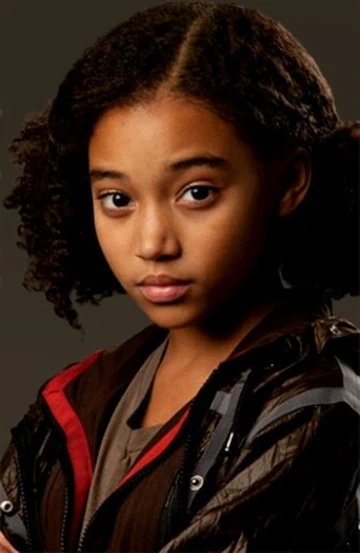
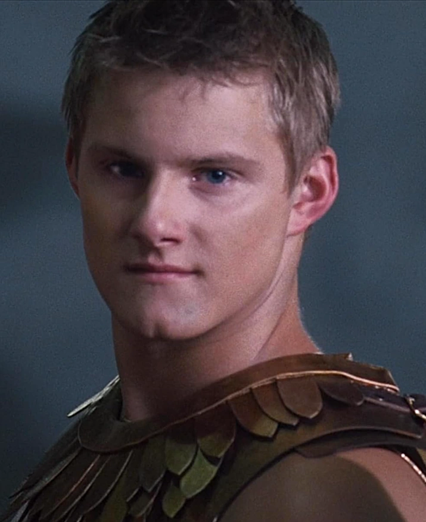
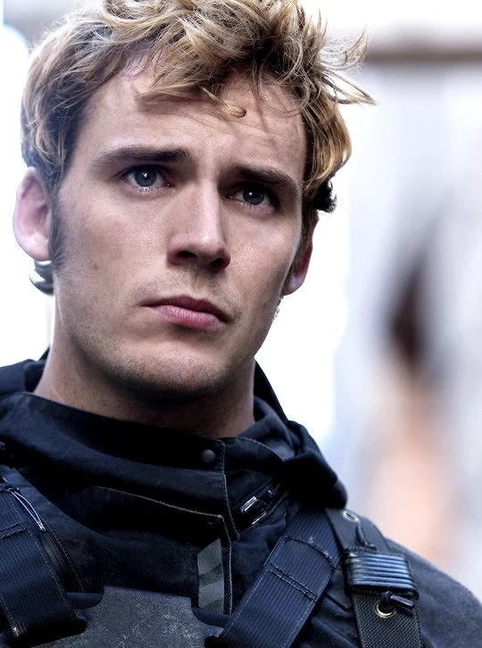

Personnages
Personnages principaux

Katniss Everdeen
Narratrice et héroïne de la saga, Katniss est une jeune chasseuse du District 12, le plus pauvre de Panem. Habile à l'arc, elle se porte volontaire pour participer aux Hunger Games à la place de sa petite sœur Prim. Courageuse et méfiante envers le Capitole, elle devient malgré elle le symbole de la rébellion sous le nom du Geai Moqueur.
Interprétée par Jennifer Lawrence, actrice américaine née en 1990, aussi oscarisée pour "Silver Linings Playbook".

Peeta Mellark
Fils du boulanger du District 12, Peeta est le deuxième tribut du district. Amoureux de Katniss depuis l'enfance, il est doux, loyal et doué avec les mots. Il fait équipe avec elle dans l'arène et devient son partenaire tout au long de la saga.
Interprété par Josh Hutcherson, acteur américain né en 1992.

Gale Hawthorne
Meilleur ami et partenaire de chasse de Katniss au District 12. Doué pour poser des pièges, il est révolté par les injustices du Capitole et devient un combattant actif de la rébellion.
Interprété par Liam Hemsworth, acteur australien né en 1990, frère de Chris Hemsworth.

Haymitch Abernathy
Mentor de Katniss et Peeta, Haymitch est un ancien vainqueur des Hunger Games devenu alcoolique. Cynique en apparence, c'est en réalité un stratège redoutable qui aide beaucoup ses deux tributs à survivre.
Interprété par Woody Harrelson, acteur américain né en 1961, révélé par la série "Cheers".

Effie Trinket
Escorte du District 12, pétillante et très attachée aux bonnes manières du Capitole. Malgré ses excentricités, elle s'attache sincèrement à Katniss et Peeta au fil de la saga.
Interprétée par Elizabeth Banks, actrice américaine née en 1974, connue pour la trilogie "Pitch Perfect".
Antagonistes de la révolte

Président Coriolanus Snow
Président de Panem depuis des décennies et antagoniste principal de la trilogie. Manipulateur et impitoyable, il incarne la cruauté et le contrôle absolu du Capitole sur les districts.
Interprété par Donald Sutherland (1935-2024), acteur canadien révélé par "M*A*S*H" dans les années 1970.

Présidente Alma Coin
Présidente du District 13, elle dirige officiellement la rébellion contre le Capitole. Mais au fil de « La Révolte », elle se révèle prête à tout, même aux pires bassesses, pour prendre le pouvoir à la place de Snow — devenant une seconde antagoniste inattendue.
Interprétée par Julianne Moore, actrice américaine née en 1960, oscarisée pour "Still Alice".
Personnages importants du 1er film — Hunger Games

Rue
Jeune tribut du District 11, âgée de seulement 12 ans. Alliée de Katniss pendant les 74e Jeux, sa mort marque un tournant émotionnel majeur du premier film.
Interprétée par Amandla Stenberg, actrice américaine née en 1998.

Cato
Tribut du District 2, chef des « Carrières » (tributs entraînés dès l'enfance pour les Jeux). Impitoyable et redoutable au combat, il est le grand rival de Katniss dans l'arène.
Interprété par Alexander Ludwig, acteur canadien né en 1992, connu aussi pour la série "Vikings".
Personnages importants du 2e film — L'Embrasement

Finnick Odair
Ancien vainqueur des Jeux venu du District 4, aussi charmeur que stratège. Il devient un allié clé de Katniss pendant le Quatrième Quart de Quell, puis un combattant important de la rébellion.
Interprété par Sam Claflin, acteur britannique né en 1986.

Johanna Mason
Ancienne vainqueure du District 7, au caractère dur et cynique. Elle avait gagné ses Jeux en cachant ses talents jusqu'à la fin, et devient une alliée précieuse de Katniss.
Interprétée par Jena Malone, actrice américaine née en 1984.
Personnages importants des films La Révolte (1 & 2)

Plutarch Heavensbee
Ancien organisateur en chef des Hunger Games, il se révèle être l'un des cerveaux secrets de la rébellion. C'est lui qui orchestre la stratégie médiatique autour de Katniss et du Geai Moqueur.
Interprété par Philip Seymour Hoffman (1967-2014), acteur américain oscarisé pour "Capote".